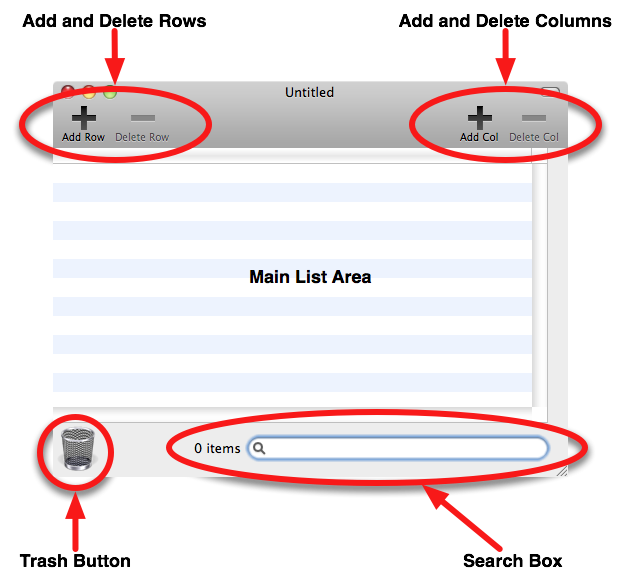
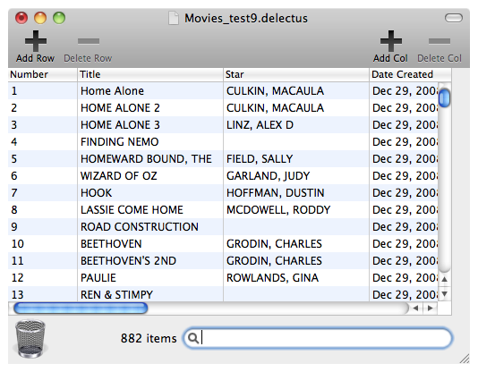

Delectus creates, edits, and saves lists. Lists of what? Lists of anything you choose.
A Delectus list is made of rows that are divided into columns. You decide how many columns to make, and what label each one has. You decide how many rows to add. You decide what text to put in each column of each row.
Delectus was originally designed to help a little old lady keep track of all the movies in her very large collection, but you can use it to keep lists of anything you wish.
The Main Window
The first time you launch Delectus, it creates an empty document window. The window looks something like this:

The main parts of the window are labeled:
The Main List Area shows the items in the document. Each row contains one item.
The Add and Delete Rows buttons enable you to add rows in which you can enter information, or to delete rows when they are no longer useful.
The Add and Delete Columns buttons offer the same ability for columns, enabling you to add or remove them as needed.
The Trash Button shows you when items have been deleted, and enable you to make the deleted items visible, so that you can undelete them if you wish.
In the Search Box, you can type text to search for matching items.
Here's what a list document looks like when it's filled with items:

Each item is on its own row. The columns ("Number", "Title", "Star", and "Date Created" in the example) are names that you create, using the Add Col button.
How to Create a Document
How do you get from an empty document, like the one at the top of this page, to a filled document, like the one below it?
Easy:
Start by launching Delectus, or, if it's already running, pull down the "File" menu and choose "New". Delectus creates a new empty document.
Add some columns by clicking the Add Col button at the top right. Delectus asks you for a label for each new column. It won't let you use a label if there's already a column in the document that uses it; each column has to have its own label.
Add a row by clicking the Add Row button at the top left. Delectus adds a new empty row. You can type the information you want into each column of the new row by clicking in each column of the row. You don't have to add information to every column. In fact, you can leave the whole row empty if you want, but then it might be a little bit hard to tell that it's there.
When you're done entering your information, save the document. Pull down the "File" menu and choose "Save", or "Save As", and choose a place to save your new list document.
That's it! The next time you open that document, your items will be in it. Make sure you remember where you saved it!